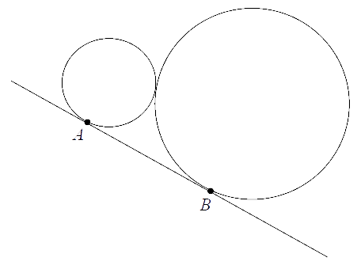

Jesteś tutaj: Matura
podstawowa - kurs - część 44 - zadania
Matura podstawowa - kurs - część 44 - zadania
Cały kurs na: ./matematyka-matura-podstawowa-kurs.html.
Na odcinku \(AB\) wybrano punkt \(C\), a następnie zbudowano trójkąty równoboczne
\(ACD\) i \(CBE\) tak, że wierzchołki \(D\) i \(E\) leżą po tej samej stronie prostej \(AB\). Okręgi
opisane na tych trójkątach przecinają się w punktach \(C\) i \(P\) (zobacz rysunek).  Udowodnij, że miara kąta \(APB\) jest
równa \(120^\circ \).
Udowodnij, że miara kąta \(APB\) jest
równa \(120^\circ \).
Udowodnij, że miara kąta \(APB\) jest
równa \(120^\circ \).Punkty \(A, B, C, D\) i \(E\) leżą na okręgu o środku \(S\) i dzielą ten okrąg na
pięć łuków równej długości (zobacz rysunek).  Wówczas miara kąta ostrego \(\alpha \) między cięciwą \(AB\) i styczną do tego okręgu
w punkcie \(A\) jest równa
Wówczas miara kąta ostrego \(\alpha \) między cięciwą \(AB\) i styczną do tego okręgu
w punkcie \(A\) jest równa
Wówczas miara kąta ostrego \(\alpha \) między cięciwą \(AB\) i styczną do tego okręgu
w punkcie \(A\) jest równa A.\( \alpha =18^\circ \)
B.\( \alpha =30^\circ \)
C.\( \alpha =36^\circ \)
D.\( \alpha =54^\circ \)
C
Dane są dwa okręgi o promieniach \(12\) i \(17\). Mniejszy okrąg przechodzi przez
środek większego okręgu. Odległość między środkami tych okręgów jest równa
A.\( 5 \)
B.\( 12 \)
C.\( 17 \)
D.\( 29 \)
B
Oblicz kąt \(\alpha \) między cięciwą \(PQ\), a styczną do okręgu w punkcie \(P\).

\(\alpha =65^\circ \)
Dany jest prostokąt \(ABCD\). Okręgi o średnicach \(AB\) i \(AD\) przecinają się w
punktach \(A\) i \(P\) (zobacz rysunek). Wykaż, że punkty \(B, P\) i \(D\) leżą na jednej prostej.

Dwa okręgi są styczne zewnętrznie. Odległość ich środków jest równa \(8\) cm. Gdyby
te okręgi były styczne wewnętrznie, to odległość ich środków byłaby równa \(2\) cm. Oblicz długości
promieni tych okręgów.
\(r_1=5\), \(r_2=3\)
Na trójkącie równoramiennym \( ABC \), w którym \( \vert{AC}\vert=\vert{BC}\vert \)
opisano okrąg o środku \( O \). Prosta \( k \) jest styczna do tego okręgu w punkcie \( B \) i \(
\vert{\sphericalangle BOC}\vert=140^\circ \).  Kąt \( \alpha \) ma miarę
Kąt \( \alpha \) ma miarę
Kąt \( \alpha \) ma miarę A.\(70^\circ \)
B.\(40^\circ \)
C.\(90^\circ \)
D.\(50^\circ \)
B
Dwa okręgi o promieniach \(r\) i \(R\) są styczne zewnętrznie i są styczne do
wspólnej prostej w punktach \(A\) i \(B\) (zobacz rysunek). Oblicz wartość iloczynu \(rR\), jeżeli
wiadomo, że odcinek \(AB\) ma długość \(5\). 
\(\frac{25}{4}\)